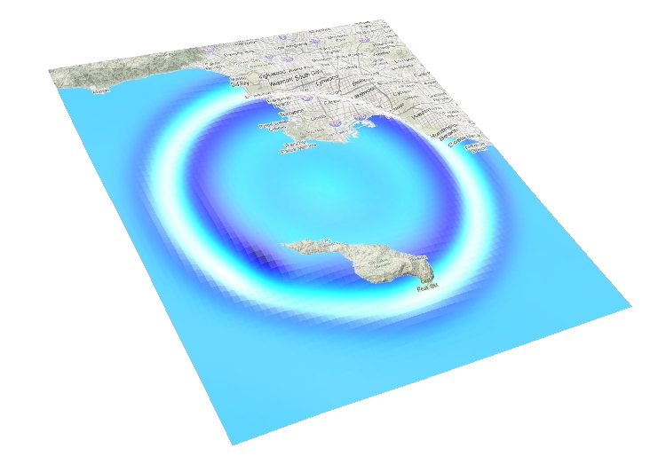
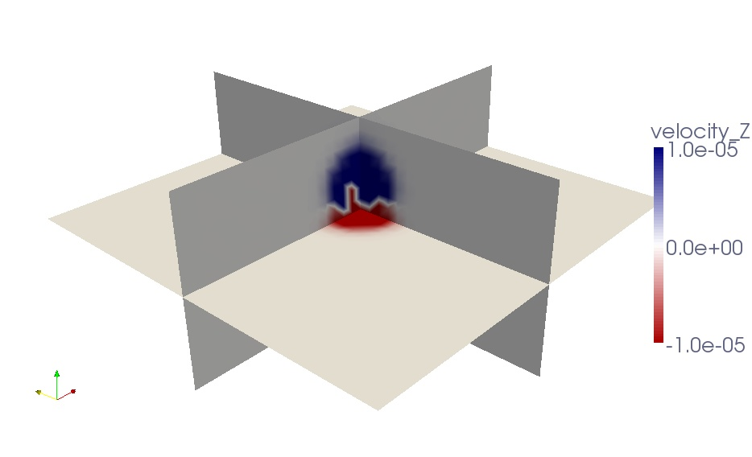
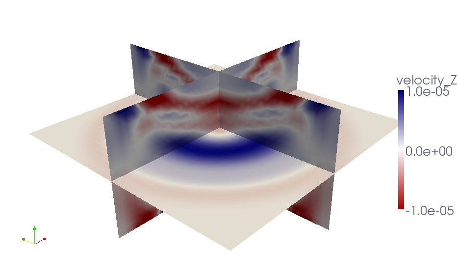

Table of Contents
Graphics
Meshes
In case you used the internal mesher xmeshfem3D to create and partition your mesh, you can output mesh files in ABAQUS (.INP) and DX (.dx) format to visualize them. For this, you must set either the flag CREATE_DX_FILES or CREATE_ABAQUS_FILES to .true. in the mesher’s parameter file Mesh_Par_file prior to running the mesher (see Chapter [cha:Running-the-Mesher-Meshfem3D] for details). You can then use AVS or OpenDX to visualize the mesh and MPI partition (slices).
<div class="figcaption" style="text-align:justify;font-size:80%">Figure: Visualization using Paraview of VTK files created by xgenerate_databases showing P- and S-wave velocities assigned to the mesh points. The mesh was created by xmeshfem3D for 4 processors.</div> 
You have also the option to visualize the distributed databases produced by xgenerate_databases using Paraview . For this, you must set the flag SAVE_MESH_FILES to .true. in the main parameter file Par_file (see Chapter [cha:Main-Parameter] for details). This will create VTK files for each single partition. You can then use Paraview to visualized these partitions.
To visualize seismograms with Paraview, you should turn off the flag SU_FORMAT, and turn on the use binary seismograms flag. This will generate .bin files, that you can open with Paraview. You have to select the way you open it (“raw”), and specify the dimensions of the file (NSTEP and NREC).
Movies
To make a surface or volume movie of the simulation, set parameters MOVIE_SURFACE, MOVIE_VOLUME, MOVIE_TYPE, and NTSTEP_BETWEEN_FRAMES in the Par_file. Turning on the movie flags, in particular MOVIE_VOLUME, produces large output files. MOVIE_VOLUME files are saved in the LOCAL_PATH directory, whereas MOVIE_SURFACE output files are saved in the OUTPUT_FILES directory. We save the displacement field if the parameter SAVE_DISPLACEMENT is set, otherwise the velocity field is saved. The look of a movie is determined by the half-duration of the source. The half-duration should be large enough so that the movie does not contain frequencies that are not resolved by the mesh, i.e., it should not contain numerical noise. This can be accomplished by selecting a CMT HALF_DURATION > 1.1 (\times) smallest period (see figure [fig:CMTSOLUTION-file]). When MOVIE_SURFACE = .true., the half duration of each source in the CMTSOLUTION file is replaced by
[\sqrt{(}\mathrm{\mathtt{HALF_DURATIO}\mathtt{N}^{2}}+\mathrm{\mathtt{HDUR_MOVI}\mathtt{E}^{2}})]
NOTE: If HDUR_MOVIE is set to 0.0, the code will select the appropriate value of 1.1 (\times) smallest period. As usual, for a point source one can set half duration in the CMTSOLUTION file to be 0.0 and HDUR_MOVIE = 0.0 in the Par_file to get the highest frequencies resolved by the simulation, but for a finite source one would keep all the half durations as prescribed by the finite source model and set HDUR_MOVIE = 0.0.
Movie Surface and Shakemaps
When running xspecfem3D with the MOVIE_SURFACE flag turned on, the code outputs moviedata?????? files in the OUTPUT_FILES directory. There are several flags in the main parameter file Par_file that control the output of these movie data files, please see section [cha:Main-Parameter] for more details. Especially, the following parameters affect the output:
-
SAVE_DISPLACEMENT: to save displacement instead of velocity, -
NTSTEP_BETWEEN_FRAMES: to set the timesteps between frames, -
USE_HIGHRES_FOR_MOVIES: to save values at all GLL point instead of element edges.
You can also output shakemaps independant of the MOVIE_SURFACE flag. Shakemaps show the peak-ground values of the simulation. For creating shakemaps (at the end of the simulation), you would set the parameter CREATE_SHAKEMAP to .true.. For shakemaps, both the parameters MOVIE_TYPE and USE_HIGHRES_FOR_MOVIES affect the output. The following setting has an additional affect:
MOVIE_TYPE: if set to (1), the horizontal peak-ground values of displacement/velocity/acceleration are output. if set to (2), the maximum length of the particle displacement/velocity/acceleration vector is output. Please be aware that these peak-ground values can differ from each other.
The movie and shakemap output files are in a custom binary format, but there is a program provided to convert the output into more user friendly formats:
xcreate_movie_shakemap_AVS_DX_GMT
From create_movie_shakemap_AVS_DX_GMT.f90, it outputs data in ASCII, OpenDX, or AVS format (also readable in ParaView). Before compiling the code, make sure you have the file surface_from_mesher.h in the OUTPUT_FILES/ directory. This file will be created by the solver run. Then type
make xcreate_movie_shakemap_AVS_DX_GMT
and run the executable xcreate_movie_shakemap_AVS_DX_GMT in the main directory. It will create visualization files in your format of choice. The code will prompt the user for input parameters.
 <div class="figcaption" style="text-align:justify;font-size:80%">Figure: Visualization using AVS files created by
<div class="figcaption" style="text-align:justify;font-size:80%">Figure: Visualization using AVS files created by xcreate_movie_shakemap_AVS_DX_GMT showing movie snapshots of vertical velocity components at different times.</div>  <div class="figcaption" style="text-align:justify;font-size:80%">Figure: Visualization using AVS files created by
<div class="figcaption" style="text-align:justify;font-size:80%">Figure: Visualization using AVS files created by xcreate_movie_shakemap_AVS_DX_GMT showing movie snapshots of vertical velocity components at different times.</div> 
The SPECFEM3D Cartesian code is running in near real-time to produce animations of southern California earthquakes via the web; see Southern California ShakeMovie.
Movie Volume
When running xspecfem3D with the MOVIE_VOLUME flag turned on, the code outputs several files in LOCAL_PATH specified in the main Par_file, e.g. in directory OUTPUT_FILES/DATABASES_MPI. The output is saved by each processor at the time interval specified by NTSTEP_BETWEEN_FRAMES. For all domains, the velocity field is output to files:
proc??????_velocity_X_it??????.bin
proc??????_velocity_Y_it??????.bin
proc??????_velocity_Z_it??????.bin
For elastic domains, the divergence and curl taken from the velocity field, i.e. (\nabla\cdot{\bf {v}}) and (\nabla\times{\bf {v}}), get stored as well:
proc??????_div_it??????.bin
proc??????_curl_X_t??????.bin
proc??????_curl_Y_it??????.bin
proc??????_curl_Z_it??????.bin
The files denoted proc??????_div_glob_it??????.bin and proc??????_curl_glob_it??????.bin are stored on the global points only, all the other arrays are stored on all GLL points. Note that the components X/Y/Z can change to E/N/Z according to the SUPPRESS_UTM_PROJECTION flag (see also Appendix [cha:Coordinates] and [cha:channel-codes]).
 <div class="figcaption" style="text-align:justify;font-size:80%">Figure: Paraview visualization using movie volume files (converted by xcombine_vol_data and mesh2vtu.pl) and showing snapshots of vertical velocity components at different times.</div>  <div class="figcaption" style="text-align:justify;font-size:80%">Figure: Paraview visualization using movie volume files (converted by
<div class="figcaption" style="text-align:justify;font-size:80%">Figure: Paraview visualization using movie volume files (converted by xcombine_vol_data and mesh2vtu.pl) and showing snapshots of vertical velocity components at different times.</div> 
To visualize these files, we use an auxiliary program combine_vol_data.f90 to combine the data from all slices into one mesh file. To compile it in the root directory, type:
make xcombine_vol_data
which will create the executable bin/xcombine_vol_data. To output the usage of this executable, type
./bin/xcombine_vol_data
without arguments.
xcombine_vol_data will combine the data on the different processors (located in OUTPUT_FILES/DATABASES_MPI), for a given quantity and a given iteration, to one file. For example, if you want to combine velocity_Z, for the iteration 400 on 4 processors, i.e. if you want to combine these files :
proc000000_velocity_Z_it000400.bin
proc000001_velocity_Z_it000400.bin
proc000002_velocity_Z_it000400.bin
proc000003_velocity_Z_it000400.bin
You have to go in the directory of the concerned example (where are the directories DATA, OUTPUT_FILES, etc.). Then, you can launch xcombine_vol_data, specifying the path where it is located. As an example, if the DATA and OUTPUT_FILES directories of the concerned example are in the root specfem3d directory, xcombine_vol_data is in ./bin, and you have to type:
./bin/xcombine_vol_data 0 3 velocity_Z_it000400 ./OUTPUT_FILES/DATABASES_MPI ./OUTPUT_FILES 0
Here, (0) is the number of the first processor, (3) the number of the last one, velocity_Z_it000400 the name of the files we want to combine without the prefix proc000000*_, ./OUTPUT_FILES/DATABASES_MPI the directory where the files are located, ./OUTPUT_FILES the directory where the combined file will be stored, and (0) is the parameter to create a low-resolution mesh file ((1) for a high-resolution).
When compiling the code, you will get two executables related to this: xcombine_vol_data, and xcombine_vol_data_vtk. Use the executable that has the _vtk extension if you want to directly create VTK files. If you use the executable that does not have the _vtk extension, then the output mesh file will have a name of the form velocity_Z_it000400.mesh. You will then have to convert the .mesh file into the VTU (Unstructured grid file) format which can be viewed in ParaView.
For this task, you can use and modify the script mesh2vtu.pl located in directory utils/Visualization/Paraview, for example:
mesh2vtu.pl -i velocity_Z_it000400.mesh -o velocity_Z_it000400.vtu
Notice that this Perl script uses a program mesh2vtu in the utils/Visualization/Paraview/mesh2vtu directory, which further uses the VTK run-time library for its execution. Therefore, make sure you have them properly set in the script according to your system.
Then, to do a movie with several iterations, you have to repeat this process for each iteration you want to put in your movie.
Finite-Frequency Kernels
The finite-frequency kernels computed as explained in Section [sec:Adjoint-simulation-finite] are saved in the LOCAL_PATH at the end of the simulation. Therefore, we first need to collect these files on the front end, combine them into one mesh file, and visualize them with some auxiliary programs.
-
Create slice files
We will only discuss the case of one source-receiver pair, i.e., the so-called banana-doughnut kernels. Although it is possible to collect the kernel files from all slices on the front end, it usually takes up too much storage space (at least tens of gigabytes). Since the sensitivity kernels are the strongest along the source-receiver great circle path, it is sufficient to collect only the slices that are along or close to the great circle path.
A Perl script
slice_number.pllocated in directoryutils/Visualization/Paraview/can help to figure out the slice numbers that lie along the great circle path. It applies to meshes created with the internal mesherxmeshfem3D.-
On machines where you have access to the script, copy the
Mesh_Par_file, andoutput_solverfiles, and run:slice_number.pl Mesh_Par_file output_solver.txt slice_filewhich will generate a
slices_file. -
For cases with multiple sources and multiple receivers, you need to provide a slice file before proceeding to the next step.
-
-
Collect the kernel files
After obtaining the slice files, you can collect the corresponding kernel files from the given slices.
-
You can use or modify the script
utils/copy_basin_database.plto accomplish this:utils/copy_database.pl slice_file lsf_machine_file filename [jobid]where
lsf_machine_fileis the machine file generated by the LSF scheduler,filenameis the kernel name (e.g.,rho_kernel,alpha_kernelandbeta_kernel), and the optionaljobidis the name of the subdirectory underLOCAL_PATHwhere all the kernel files are stored. -
After executing this script, all the necessary mesh topology files as well as the kernel array files are collected to the local directory of the front end.
-
-
Combine kernel files into one mesh file
We use an auxiliary program
combine_vol_data.f90to combine the kernel files from all slices into one mesh file.-
Compile it in the root directory:
make xcombine_vol_data ./bin/xcombine_vol_data slice_list filename input_dir output_dir high/low-resolutionwhere
input_diris the directory where all the individual kernel files are stored, andoutput_diris where the mesh file will be written. -
Use 1 for a high-resolution mesh, outputting all the GLL points to the mesh file, or use 0 for low resolution, outputting only the corner points of the elements to the mesh file.
-
The output mesh file will have the name
filename_rho(alpha,beta).mesh
-
-
Convert mesh files into .vtu files
-
We next convert the
.meshfile into the VTU (Unstructured grid file) format which can be viewed in ParaView. For this task, you can use and modify the scriptmesh2vtu.pllocated in directoryutils/Visualization/Paraview/, for example:mesh2vtu.pl -i file.mesh -o file.vtu -
Notice that this Perl script uses a program
mesh2vtuin theutils/Visualization/Paraview/mesh2vtudirectory, which further uses the VTK run-time library for its execution. Therefore, make sure you have them properly set in the script according to your system.
-
-
Copy over the source and receiver .vtk file
In the case of a single source and a single receiver, the simulation also generates the file
sr.vtklocated in theOUTPUT_FILES/directory to describe the source and receiver locations, which can also be viewed in Paraview in the next step. -
View the mesh in ParaView
Finally, we can view the mesh in ParaView .
-
Open ParaView.
-
From the top menu, (\rightarrow), select
file.vtu, and click the button.- If the mesh file is of moderate size, it shows up on the screen; otherwise, only the bounding box is shown.
-
Click (\rightarrow) (\rightarrow) and select to display it.
-
To create a cross-section of the volumetric mesh, choose (\rightarrow) , and under , choose (\rightarrow) .
-
Fill in center and normal information given by the
global_slice_number.plscript (either from the standard output or fromnormal_plane.txtfile). -
To change the color scale, go to (\rightarrow) (\rightarrow) and reselect lower and upper limits, or change the color scheme.
-
Now load in the source and receiver location file by (\rightarrow) , select
sr.vtk, and click the button. Choose (\rightarrow) , and represent the points by ‘’. -
For more information about ParaView, see the ParaView Users Guide .
-
![(a) Top Panel: Vertical source-receiver cross-section of the S-wave finite-frequency sensitivity kernel (K_{\beta}) for station GSC at an epicentral distance of 176 km from the September 3, 2002, Yorba Linda earthquake. Lower Panel: Vertical source-receiver cross-section of the 3D S-wave speed model used for the spectral-element simulations (Komatitsch et al. 2004). (b) The same as (a) but for station HEC at an epicentral distance of 165 km (Liu and Tromp 2006).<span data-label="figure:P-wave-speed-finite-frequency"></span>](figures/3D-S-Kernel.jpg)
References
Komatitsch, Dimitri, Qinya Liu, Jeroen Tromp, Peter Süss, Christiane Stidham, and John H. Shaw. 2004. “Simulations of Ground Motion in the Los Angeles Basin Based Upon the Spectral-Element Method.” Bull. Seism. Soc. Am. 94 (1): 187–206. doi:10.1785/0120030077.
Liu, Qinya, and Jeroen Tromp. 2006. “Finite-Frequency Kernels Based on Adjoint Methods.” Bull. Seism. Soc. Am. 96 (6): 2383–97. doi:10.1785/0120060041.
This documentation has been automatically generated by pandoc based on the User manual (LaTeX version) in folder doc/USER_MANUAL/ (Mar 10, 2020)